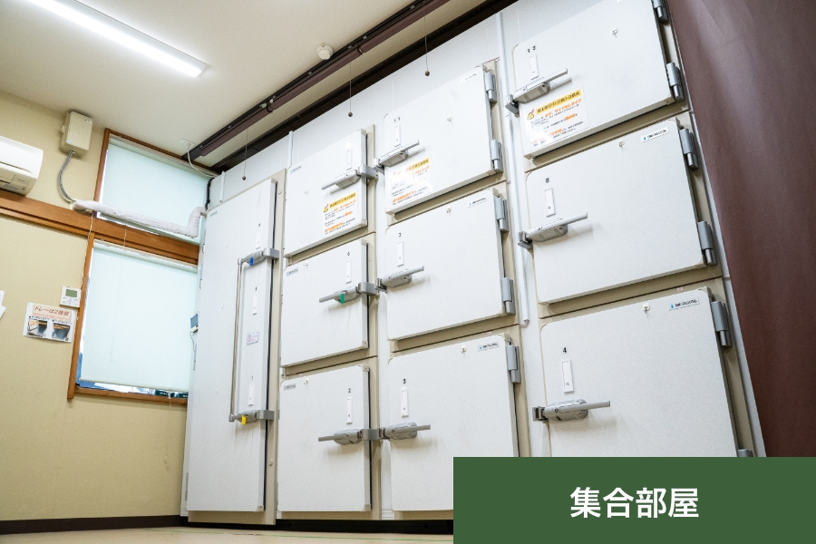

納骨堂
霊安室
醫王寺の霊安室の種類
簡単なご葬儀もできる部屋に安置可能な一体用と十二体安置可能な集合用があります。
-
簡単なご葬儀もできる個室に安置可能な一体用の霊安室 です。
この部屋でご遺体の保存からご葬儀、出棺まで綺麗なお姿でご対応可能できます。少人数でのご葬儀が可能です。 -

十二体保管可能な収納部屋となります。各種扉が分かれているため御面会も可能です。電波が効いているため綺麗なお姿で保管可能です。
国宝殿永安室－永遠に－
「お別れの時まで美しいお姿のまま故人様をお預かりいたします」
（業者様搬入搬出可能時間：365 日24 時間）
-
ドライアイス不要の最新技術を搭載した次世代型ご遺体冷蔵保存庫です。故人様を環境衛生に優れた電場循環式保存庫「ペルソナ」の中で安置し、湿度管理も含めてご遺体の劣化抑制し、お旅立ちする故人様を最長一か月、美しいお姿のままお預かりいたします。
※ご遺体をお預かりした時点での環境により保存状態が異なります。
-
故人様とのご面会も可能となっており、お見送りの時までゆっくりと時間をお過ごしいただけます。
★要予約(ご面会対応可能時間：9時半から16時まで)
醫王寺の永安室 7 つの特徴
-
1
世界初の電場機能
電場を保存庫「ベルソナ」内に発生させ、氷点下で安置したご遺体が凍結しないで保存できます。
ドライアイスは全く使用しませんので、ドライアイス交換の費用と手間が掛かりません。- ① 交流電場によって水分子が細分化し、凍結温度を下げます。
- ② 交流電場の作用で細分された水が自転することにより、運動エネルギーが発生しご遺体を凍結しにくい状態に維持します。
- ③ 水の分子配列を交流電場化で整列させ、湿度管理も含めてご遺体の劣化を抑制します。
-
2
環境衛生
ご遺体は、環境衛生に優れた循環式保存庫「ペルソナ」の中で安置されますので、お部屋の空気を汚しません。また、細菌汚染も起こりませんので、安心して保管できます。
-
3
温度域
いつでもお顔を見ることができ、お肌に触れることができます。
＜温度域− 4C 〜 +0＞
家庭用電源100V で使用可能です。移動はローラー付なので手軽です。 -
4
キレイな状態
通常1 ヵ月程度、ご遺体は綺麗な状態で保管できます。
ご遺体は凍結しませんので、いつまでもお亡くなりになった時と同じ状態で、安らかに安置できます。 -
5
徹底した環境管理
ご遺体に最適な温度管理・湿度管理・除菌・脱臭管理を保存庫「ペルソナ」内で行います。最適な環境管理で、綺麗なお姿を保持いたします。
-
6
電磁波は発生しません
100ボルトの電源で使用できますので、場所を選ばず一般家庭はもとより、あらゆる場所でご利用できます。なお、電磁波は発生しませんので、健康被害の心配がなく使用できます。
-
7
災害対応
災害対応に役立ちます。身元確認、司法解剖等の必要性が生じた場合に、最もご遺体が尊厳あるお姿で保管できます。そのような時にお役に立つことができます。